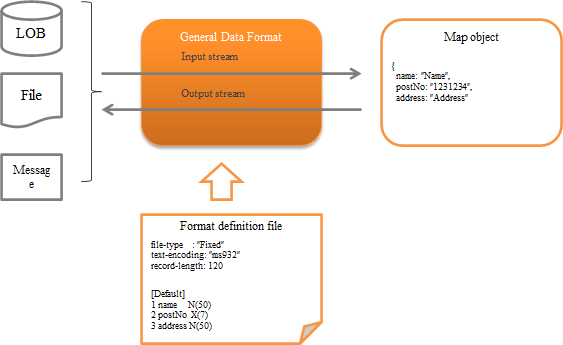

7.4.2. General Data Format¶
Table of contents
- Function overview
- Module list
- How to use
- Define the format of input/output data
- Output data to file
- Used for file download
- Read the upload file
- Read and write the data of JSON and XML hierarchical structure
- Using namespaces in XML
- Define the content for an element with XML attributes
- Replace (collate) the characters
- Format the display format of the output data
- Expansion example
Provides a general-purpose input/output library function that supports various data formats handled by the system.
The general configuration of this function is as follows.
7.4.2.1. Function overview¶
7.4.2.1.1. Several formats are supported as standard¶
The following formats are supported as standard.
The fixed-length and variable-length data formats are compatible even with multi-layout data having a different layout for each record. (XML and JSON do not have the concept of a record.)
- fixed-length
- Variable length (csv, tsv, etc.)
- JSON
- XML
Important
The following are the disadvantages of this function.
A complex Format definition file needs to be created.
Implementation errors are likely to occur with input/output being limited to Map .
- The field name is required to be specified as a string, and errors during implementation are likely to occur as IDE support cannot be used.
- It is necessary to downcast the value fetched from Map on the application side. (If a mistake is made, an exception is thrown during runtime.)
Since BeanUtil is not used for mapping the data and Java object, the mapping method is different from other functions.
Method of handling the output target of Map depends on the format. For this reason, if the function is used to make the same data correspond to multiple formats, normal operation may not be performed such as an exception thrown depending on the format.
For example, some problem cases are given below.
- When null is specified for required items in XML and JSON:
- XML: Value is output as an empty character
- JSON: Throws a required exception
Depending on the output target data, JSON specifications may not be satisfied.
For example, if numeric type and boolean type is used and the output target data type does not correspond to these types, then an invalid JSON is output.
Example: When a numeric format is specified and the output target “data” is a string, invalid JSON such as {“number”: data} is output.
It is difficult to extend because the implementation class of data type that can be used depends on the data format. Also, errors in this configuration cannot be detected until run time.
Therefore, as a principle, this function is deprecated except when it is inevitable. Since Messaging uses this function internally, the use of alternative functions is not possible.
- Alternative to this function
fixed-length: Use Data Bind . Variable length: Use Data Bind . XML: JAXB is recommended. JSON: Use of OSS is recommended. For example, Jackson (external site) is widely used.
7.4.2.1.2. Supports various character sets, character types and data formats¶
It supports not only string and decimal number formats, but also packed decimal and zoned decimal that are often handled by hosts. In addition to character sets such as UTF-8 and Shift_JIS, EBCDIC are also supported.
Tip
Character set supported by the JVM of the execution environment can be used.
7.4.2.1.3. Supports conversion processes such as padding and trimming¶
Spaces, zero (0) padding and trimming that are often used in fixed-length files are supported. Therefore, there is no need for the application to perform padding or trimming.
For more information on padding and trimming, see Field converter list .
7.4.2.2. Module list¶
- To use upload helper , add
nablarch-fw-web-extension. - To use file download , add
nablarch-fw-web-extension.
<!-- General data format -->
<dependency>
<groupId>com.nablarch.framework</groupId>
<artifactId>nablarch-core-dataformat</artifactId>
</dependency>
<!--
Add the following when using the upload helper and download
-->
<dependency>
<groupId>com.nablarch.framework</groupId>
<artifactId>nablarch-fw-web-extension</artifactId>
</dependency>
7.4.2.3. How to use¶
7.4.2.3.1. Define the format of input/output data¶
The format of input/output data is defined in the format definition file.
The format definition file is created in a text file format as below. For detailed specifications, see Description Rules for Format Definition File .
file-type: "Variable" # Variable length
text-encoding: "MS932" # Character encoding of the string type field
record-separator: "\r\n" # Carriage return and Line feed (crlf)
field-separator: "," # csv
# Define record identification field
[Classifier]
1 dataKbn X # First field
3 type X # Third field
[parentData]
dataKbn = "1"
type = "01"
1 dataKbn X
2 ?filler X
3 type X
4 data X
[childData]
dataKbn = "1"
type = "02"
1 dataKbn X
2 ?filler X
3 type X
4 data X
7.4.2.3.2. Output data to file¶
This section describes how to output the data record contents to a file.
Data output to a file can be realized by using FileRecordWriterHolder .
An implementation example is shown below.
- Point
- Prepare data to be written to the file as Map .
- The key value of Map is configured as the field name defined in Define the format of input/output data . (It is not case-sensitive)
- Call the open method of FileRecordWriterHolder and make the file source writable.
- Call the write method of FileRecordWriterHolder and write the data to the file.
// Data to be written
Map<String, Object> user = new HashMap<>();
user.put("name", "Name");
user.put("age", 20);
// Open the file to be written
FileRecordWriterHolder.open("users.csv", "user_csv_format");
// Write the data
FileRecordWriterHolder.write(user, "user.csv");
Tip
To use FileRecordWriterHolder , it is necessary to configure the deployment directory of the format definition file Format definition file , output destination directory, etc. to File path management .
For the necessary directory configuration, see FileRecordWriterHolder .
Important
The file resource opened by FileRecordWriterHolder is automatically released by Output File Release Handler . Therefore, when using FileRecordWriterHolder , it is necessary to configure Output File Release Handler to the handler queue.
Important
If an invalid value is configured in the output data, it may not be processed correctly, therefore check in advance for invalid values in the application.
Important
The default behavior is to write to the file for each record. When outputting a large amount of data, writing each record to a file may not meet the performance requirements. In such a case, the default behavior should be changed to write in the specified buffer size instead of per record.
By adding the following component definition, it can be made to write in the specified buffer size instead of each record.
<!-- The component name should be dataFormatConfig. -->
<component name="dataFormatConfig" class="nablarch.core.dataformat.DataFormatConfig">
<property name="flushEachRecordInWriting" value="false" />
</component>
The buffer size used for output can be specified with the open method of FileRecordWriterHolder.
7.4.2.3.3. Used for file download¶
This section describes how to respond to the client with the data record contents in file download format.
Response of file download format can be realized by using DataRecordResponse .
An implementation example is shown below.
- Point
- When generating DataRecordResponse , specify the logical path name where the format definition file is stored and the format definition file name.
- Use DataRecordResponse#write to output the data. (When downloading multiple records, output is repeated)
- Configure Content-Type and Content-Disposition .
- Returns DataRecordResponse from the business action.
public HttpResponse download(HttpRequest request, ExecutionContext context) {
// Business process
// Create Map that stores the download data.
Map<String, Object> user = new hashMap<>()
user.put("name", "Name");
user.put("age", 30);
// Generate DataRecordResponse by specifying the logical path name where the
// format definition file is stored and name of the format definition file.
DataRecordResponse response = new DataRecordResponse("format", "users_csv");
// Output downloaded data.
response.write(user);
// Configure Content-Type header and Content-Disposition header
response.setContentType("text/csv; charset=Shift_JIS");
response.setContentDisposition("Message list.csv");
return response;
}
Tip
The storage path of the format definition file should be configured in File path management .
7.4.2.3.4. Read the upload file¶
This section describes how to read the upload file.
Upload files can be read by the following two methods with this function. As described in reading using upload helper , reading using only the general data format (this function) is recommended.
- Reading of upload file using only the general data format (this function)
This section explains the loading process of upload file using the API of this function without using the upload helper that is described later.
An implementation example is shown below.
- Point
- The upload file is acquired by calling HttpRequest#getPart .
- The parameter name is specified in the argument of HttpRequest#getPart .
- The object File of the format definition file is obtained from FilePathSetting .
- Create DataRecordFormatter from FormatterFactory by specifying the format definition file.
- Configure InputStream in DataRecordFormatter to read the upload file. Implementation class of InputStream that is configured must be supported by mark/reset.
- Call the API of DataRecordFormatter and read the record of the upload file.
public HttpResponse upload(HttpRequest req, ExecutionContext ctx) { // Get information of the upload file final List<PartInfo> partInfoList = request.getPart("users"); // Get file object of the format definition file final File format = FilePathSetting.getInstance() .getFile("format", "users-layout"); // Get format definition file and generate the formatter to read the upload file. try (final DataRecordFormatter formatter = FormatterFactory.getInstance() .createFormatter(format)) { // Configure InputStream to read the upload file in formatter and initialize. // Wrapped in BufferedInputStream as mark/reset is required to be supported. formatter.setInputStream(new BufferedInputStream(partInfoList.get(0).getInputStream())) .initialize(); // Repeat the process until there are no more records. while (formatter.hasNext()) { // Read the records. final DataRecord record = formatter.readRecord(); // Process the records final Users users = BeanUtil.createAndCopy(Users.class, record); // Rest is omitted } } catch (IOException e) { throw new RuntimeException(e); } }
- Loading an upload file using the upload helper
If an upload helper ( UploadHelper ) is used, reading of files, validation and saving files to a database can be executed easily.
However, since this function has the following restrictions (disadvantages), use of Reading of upload file using only the general data format (this function) is recommended.
- The check of input values is limited to Nablarch Validation . ( Bean Validation , which is recommended cannot be used.)
- Although expansion is possible, the degree of difficulty is high and cannot be easily implemented to meet the requirements.
Below is an example of checking the input and registration to the database for a single layout upload file.
- Point
- The upload file is acquired by calling HttpRequest#getPart .
- The parameter name is specified in the argument of HttpRequest#getPart .
- Generate UploadHelper based on the upload file acquired.
- Configure the format definition file using UploadHelper#applyFormat .
- Configure the message ID for validation error using setUpMessageIdOnError .
- Configure the Java Beans class that executes validation and the validation method using validateWith .
- Register the validated Javabeans object in DB using importWith .
public HttpResponse upload(HttpRequest req, ExecutionContext ctx) { PartInfo partInfo = req.getPart("fileToSave").get(0); // Register all records at once UploadHelper helper = new UploadHelper(partInfo); int cnt = helper .applyFormat("N11AC002") // Apply the format .setUpMessageIdOnError("format.error", // Specify the message ID for format error "validation.error", // Specify the message ID for validation error "file.empty.error") // Specify the message ID when the file is empty .validateWith(UserInfoTempEntity.class, // Specify the validation method "validateRegister") .importWith(this, "INSERT_SQL"); // Specify the SQL ID of INSERT statement }
Tip
Also see the documentation of the classes in the nablarch.fw.web.upload.util package.
7.4.2.3.5. Read and write the data of JSON and XML hierarchical structure¶
This section describes the Map structure when reading/writing the hierarchical structure data of JSON and XML.
When hierarchical data such as JSON or XML is read, the key value of Map is the value of the element name of each hierarchy that is enclosed by dots ( . ).
An example is shown below.
- Format definition file
In the case of JSON, replace the file-type with
JSON. For the method of defining the format definition file that represents the hierarchical structure, refer to the definition of hierarchical structure .file-type: "XML" text-encoding: "UTF-8" [users] # Root element 1 user [0..*] OB [user] # Nested element 1 name [0..1] N # Bottom layer element 2 age [0..1] X9 3 address [0..1] N
Important
The parent element is arbitrary, it does not support the configuration of the child element being required only if parent element exists. Therefore, when defining hierarchical structure data in the format definition file, it is recommended to define all items as optional.
- Map structure
The structure of map that outputs data to XML and JSON using the above format definition file is as follows.
- Point
- In the case of hierarchical structure, configure the value in Map with the ” parent element name +
.+ child element name ” format. - In the case of deep hierarchical structure, element names are further concatenated with
.. - The top-level element names are not required to be included in the key
- For array elements, configure the subscript (starting from 0).
- In the case of hierarchical structure, configure the value in Map with the ” parent element name +
Map<String, Object> data = new HashMap<String, Object>(); // First element of the user array element data.put("user[0].name", "Name1"); data.put("user[0].address", "Mailing address1"); data.put("user[0].age", 30); // Second element of the user array element data.put("user[1].name", "Name2"); data.put("user[1].address", "Mailing address2"); data.put("user[1].age", 31);
- XML and JSON structure
The structure of XML and JSON corresponding to the above format definition file is as given below.
- XML
<?xml version="1.0" encoding="UTF-8"?> <users> <user> <name>Name1</name> <address>Mailing address1</address> <age>30</age> </user> <user> <name>Name2</name> <address>Mailing address2</address> <age>31</age> </user> </users>
- JSON
{ "user": [ { "name": "Name1", "address": "Mailing address1", "age": 30 }, { "name": "Name2", "address": "Mailing address2", "age": 31 } ] }
7.4.2.3.5.1. Use DTD with XML¶
Important
When XML is input with this function, DTD cannot be used by default. Exceptions occur when trying to read XML that has used DTD. This is a measure to prevent XML external entity reference (XXE) .
If the target XML to be read is reliable, use of DTD can be allowed using the allowDTD property of XmlDataParser . How to use is given below.
Configure by explicitly mentioning the name XmlDataParser in the configuration of the component configuration file and permit the use of DTD.
<?xml version="1.0" encoding="UTF-8"?>
<component-configuration
xmlns="http://tis.co.jp/nablarch/component-configuration"
xmlns:xsi="http://www.w3.org/2001/XMLSchema-instance"
xsi:schemaLocation="http://tis.co.jp/nablarch/component-configuration component-configuration.xsd">
<component name="XmlDataParser" class="nablarch.core.dataformat.XmlDataParser">
<!--
Allow the use of DTD.
As there is risk of XXE attacks, only reliable XML must be used.
-->
<property name="allowDTD" value="true" />
</component>
</component-configuration>
Tip
The API of the below versions of JDK has a bug, and a NullPointerException occurs when this function is used. To avoid this bug, update the version of JDK.
- JDK6 6u65 or below
- JDK7 7u6 b15 or below
For details of the failure, see JDK-7157610 : NullPointerException occurs when parsing XML doc .
7.4.2.3.6. Using namespaces in XML¶
Namespaces may have to be used for the connection requirements with the connection destination system. Such cases are managed by defining the namespace in the format definition file.
An example is shown below.
- Point
- A namespace is defined as ” ?@Xmlns: + namespace” in the element using the namespace.
Xis the type and the URI is specified in the field converter section. - A namespace is expressed in the format of “namespace +
:+ element name”. - The key value of Map of input/output target data is “namespace + element name (first letter uppercase)”.
- A namespace is defined as ” ?@Xmlns: + namespace” in the element using the namespace.
- Format definition file
file-type: "XML" text-encoding: "UTF-8" [testns:data] # Namespace definition 1 ?@xmlns:testns X "http://testns.hoge.jp/apply" 2 testns:key1 X
- XML data
The XML corresponding to the above format definition file is as given below.
<?xml version="1.0" encoding="UTF-8"?> <testns:data xmlns:testns="http://testns.hoge.jp/apply"> <testns:key1>value1</testns:key1> </testns:data>
- Map data
The map structure for input and output is as follows.
Map<String, Object> data = new HashMap<String, Object>(); data.put("testnsKey1", "value1");
7.4.2.3.7. Define the content for an element with XML attributes¶
Define the content of an element with attributes in XML by defining the fields that represent the content in the format definition file.
The configuration example shown below.
- Point
- Specify
bodyin the field name that represents the content. To change the default field name that represents the context, see Change the content name of an element with XML attributes
- Specify
- Format definition file
file-type: "XML" text-encoding: "UTF-8" [parent] 1 child OB [child] 1 @attr X 2 body X
- XML data
The XML corresponding to the above format definition file is as given below.
<?xml version="1.0" encoding="UTF-8"?> <parent> <child attr="value1">value2</child> </parent>
- Map data
The map structure for input and output is as follows.
Map<String, Object> data = new HashMap<String, Object>(); data.put("child.attr", "value1"); data.put("child.body", "value2");
7.4.2.3.8. Replace (collate) the characters¶
The collate function is used to replace with any character available in the system when reading external data.
The usage method is shown below.
- Create a property to define the replacement rules.
In the properties file, define the replacement rule in the “Character before replacement = Character after replacement” format.
Only one character can be defined as the value for the character before and after replacement. Also, surrogate pairs are not supported.
For description rules on comments, see java.util.Properties .
髙=高 﨑=崎 唖=■
Tip
To define the replacement rules for each connection destination, create multiple properties files.
- Add the replacement rule configuration to the component configuration file
- Point
- Configure CharacterReplacementManager with component name
characterReplacementManager. - Configure CharacterReplacementConfig in list format to the configList property.
- To define multiple properties files, configure different names for the typeName property.
- Configure CharacterReplacementManager with component name
<component name="characterReplacementManager" class="nablarch.core.dataformat.CharacterReplacementManager"> <property name="configList"> <list> <!-- Collation rules for system A --> <component class="nablarch.core.dataformat.CharacterReplacementConfig"> <property name="typeName" value="a_system"/> <property name="filePath" value="classpath:a-system.properties"/> <property name="encoding" value="UTF-8"/> </component> <!-- Collation rules for system B --> <component class="nablarch.core.dataformat.CharacterReplacementConfig"> <property name="typeName" value="b_system"/> <property name="filePath" value="classpath:b-system.properties"/> <property name="encoding" value="UTF-8"/> </component> </list> </property> </component>
- Define which replacement rule to use in the format definition file
To replace characters during input/output, use replacement .
For replacement arguments, configure the typeName of the replacement rules configured above.
# Apply the replacement rules for system A 1 name N(100) replacement("a_system") # Apply the replacement rules for system B 1 name N(100) replacement("b_system")
7.4.2.3.9. Format the display format of the output data¶
When the data is output, display format of the data such as date and numbers can be formatted by using Formatter .
For details, see Formatter .
7.4.2.4. Expansion example¶
7.4.2.4.1. Add a field type¶
In some cases, the requirements cannot be met with standard data types provided by Nablarch . For example, cases where the padding character of string type is binary.
In such cases, the requirements are supported by defining project-specific field types.
The procedure is shown below.
- Create the DataType implementation class to handle field types.
- Create a factory inheritance class according to the format to enable the field type that is added.
- Configure the created factory class in the property of the configuration class according to the format.
The detailed procedure is as follows.
- Add data type implementation corresponding to the field type
Create a class that implements DataType .
Tip
The standard field type implementation is placed under the nablarch.core.dataformat.convertor.datatype package. Referring to these classes when adding implementation is recommended.
- Create factory inheritance class according to the format
Create a factory inheritance class according to the format to enable the field type that is added.
The factory class for each format is shown below
Format Factory class name Fixed (fixed-length) FixedLengthConvertorFactory Variable (variable length) VariableLengthConvertorFactory JSON JsonDataConvertorFactory XML XmlDataConvertorFactory Implementation example for fixed (fixed-length) is shown below.
public class CustomFixedLengthConvertorFactory extends FixedLengthConvertorFactory { @Override protected Map<String, Class<?>> getDefaultConvertorTable() { final Map<String, Class<?>> defaultConvertorTable = new CaseInsensitiveMap<Class<?>>( new ConcurrentHashMap<String, Class<?>>(super.getDefaultConvertorTable())); defaultConvertorTable.put("custom", CustomType.class); return Collections.unmodifiableMap(defaultConvertorTable); } }
- Configure in the property of the configuration class according to the format
Configure the factory class created earlier in the property of the configuration class according to the format.
The configuration classes and properties for each format are shown below.
Format Configuration class name (component name) Property name Fixed (fixed-length) FixedLengthConvertorSetting (fixedLengthConvertorSetting) fixedLengthConvertorFactory Variable (variable length) VariableLengthConvertorSetting (variableLengthConvertorSetting) variableLengthConvertorFactory JSON JsonDataConvertorSetting (jsonDataConvertorSetting) jsonDataConvertorFactory XML XmlDataConvertorSetting (xmlDataConvertorSetting) xmlDataConvertorFactory A configuration example for Fixed (fixed-length) is shown below.
<component name="fixedLengthConvertorSetting" class="nablarch.core.dataformat.convertor.FixedLengthConvertorSetting"> <property name="fixedLengthConvertorFactory"> <component class="com.sample.CustomFixedLengthConvertorFactory" /> </property> </component>
Important
Though the field type can be added using the convertorTable property of configuration class according to the format, its use is not recommended for the following reasons.
- In addition to the field type to be added, all field types originally defined by default have to be configured. Therefore, if the default field type changes due to the version upgrade, the change is not automatically applied and the configuration must be manually corrected, which requires more effort.
- The default definition is implemented in the factory class, and it is easy to make a configuration error as the definition has to be added to the component configuration file based on the source code.
7.4.2.4.2. Change the content name of an element with XML attributes¶
To change the content name of an element with attributes, configure the following class in the component configuration file, and configure the changed content name in the contentName property.
The configuration example of the component configuration file is shown below.
- Point
- Configure the component name of XmlDataParser to
XmlDataParser. - Configure the component name of XmlDataBuilder to
XmlDataBuilder.
- Configure the component name of XmlDataParser to
<component name="XmlDataParser" class="nablarch.core.dataformat.XmlDataParser">
<property name="contentName" value="change" />
</component>
<component name="XmlDataBuilder" class="nablarch.core.dataformat.XmlDataBuilder">
<property name="contentName" value="change" />
</component>